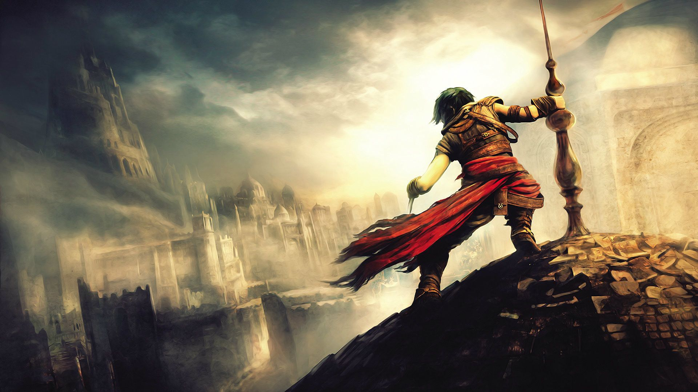

As you explore the game, you will catch glimpses of other players who are in the same place at the same time. These will look like the phantom images you see when you activate a bloodstain, but will represent actual "live" players who are traveling through their own game worlds in real time. They cannot be interacted with directly, although it is possible to gesture at one another should the mood strike.
You will occasionally see a bloodstain on the ground. When you stand on it, you can activate it. Doing so will replay the last few seconds of another player's life at that location, ending with their death. The death usually does not take place at the actual bloodstain, similar to how your own bloodstain is usually not precisely where you actually died but rather where you were several moments before. The replay shows the slain player as a phantom, but does not show any other aspect of their death such as what specifically killed them (unless the phantom falls off a cliff or the like).
Near bonfires (and only near them), the above phantoms of other players may appear more distinct and visible than elsewhere in the game, showing all of their equipment and even whether they are in human form or not. Seeing other people resting at the same bonfire helps players realize that these people are probably facing the same challenges.